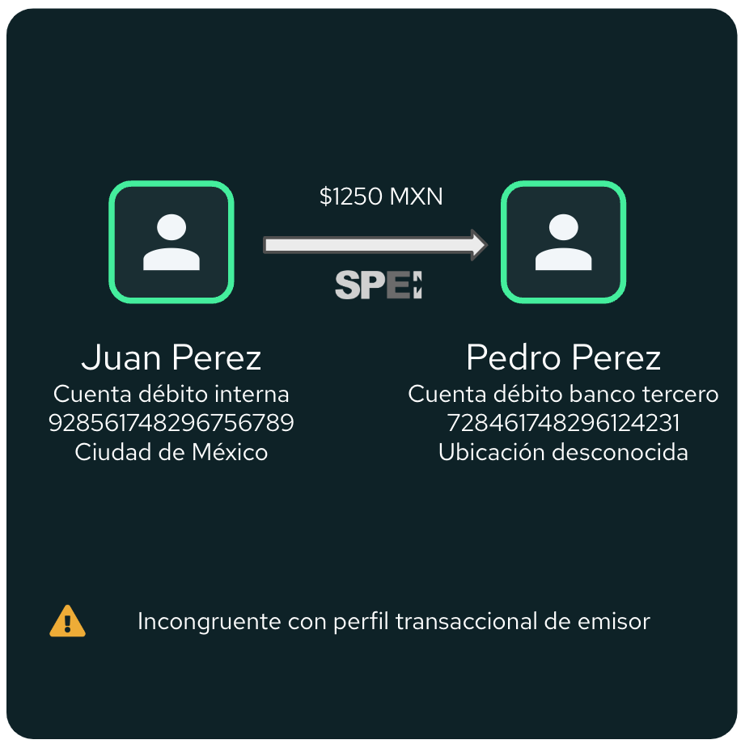
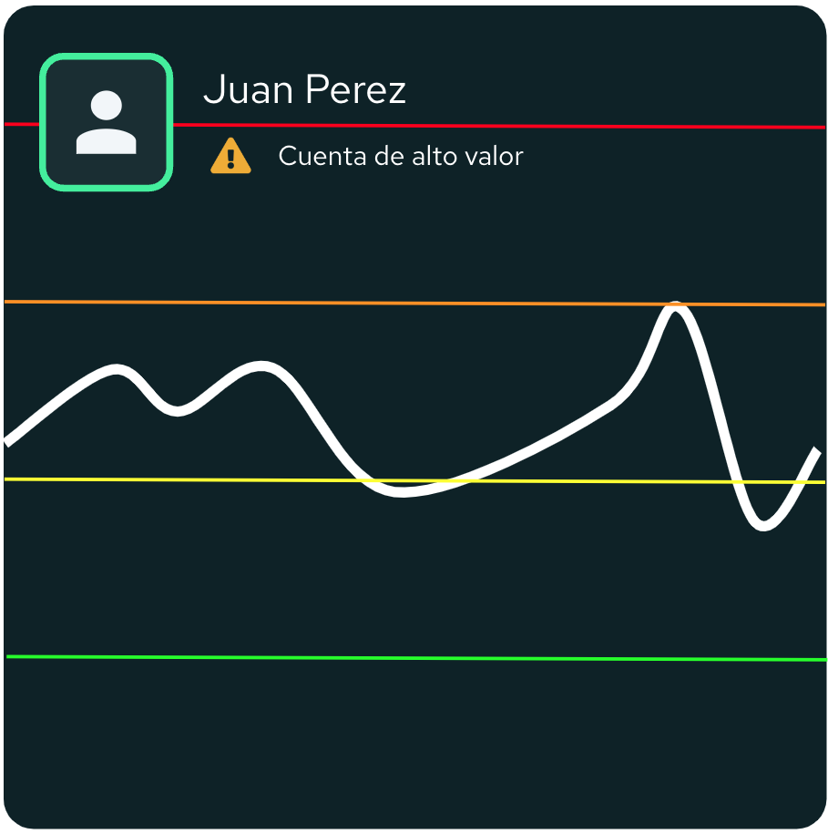
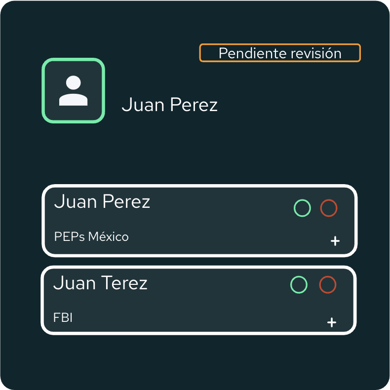
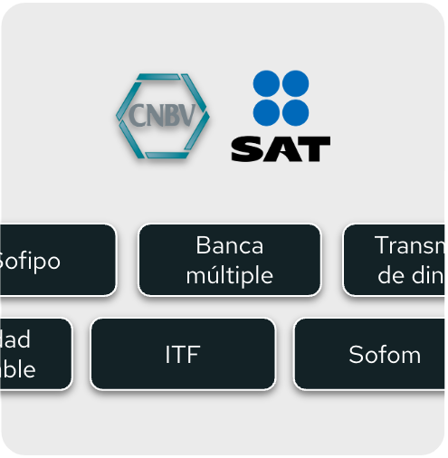

Detect suspicious activities and behavior from your customers with comprehensive continuous monitoring. Speed up your compliance operations, minimize friction with your customers, stay clear of fines from regulators and evade financial crime.
Use a wide range of alert scenarios on transactional data that minimize false negatives and false positives with pre-built and personalized scenarios.
Use pre-built rules, scenarios and risk models to get up and running quickly. Use common regulatory typologies or establish custom rules easily.
Run experiments with different rules and scenarios. Backtest models or run them in parallel to the models in production.

Configure client risk models and risk matrix that align with your business model and applicable regulation. Generate automated risk evaluations with the periodicity needed.
Use pre-built risk factors including those required by global AML and Fincrime standards or build your own custom factors.
Automate the execution of remediation controls to reduce customer risk and fincrime risk.

Execute watchlist searches in the onboarding process or establish periodic search programs to monitor customers as an ongoing concern. Automate all search processes.
Use preloaded watchlists or integrate your own provider. Create personalized lists manually or programmatically.
Watchlists are cleaned and normalized to apply matching algorithms based on statistical and phonetic proximity.

Automatically generate regulatory reports of your specific institution type and regulatory requirements and execute the corresponding reporting workflows.
Configure alerts that remind the compliance team when regulatory reports are due so you can file on time and avoid fines.
Every action taken in the platform, every alert, dictamination and report generated will have its unique and detailed audit trail.

Run institutional risk assessment evaluations in accordance with the Risk Based Approach. Identify risk indicators, implement mitigation strategies and monitor residual risk.
Visualize how risk is trending in your institution and evaluate how effective different mitigation strategies have been.
Create reports of all risk evaluations for the right stakeholders.